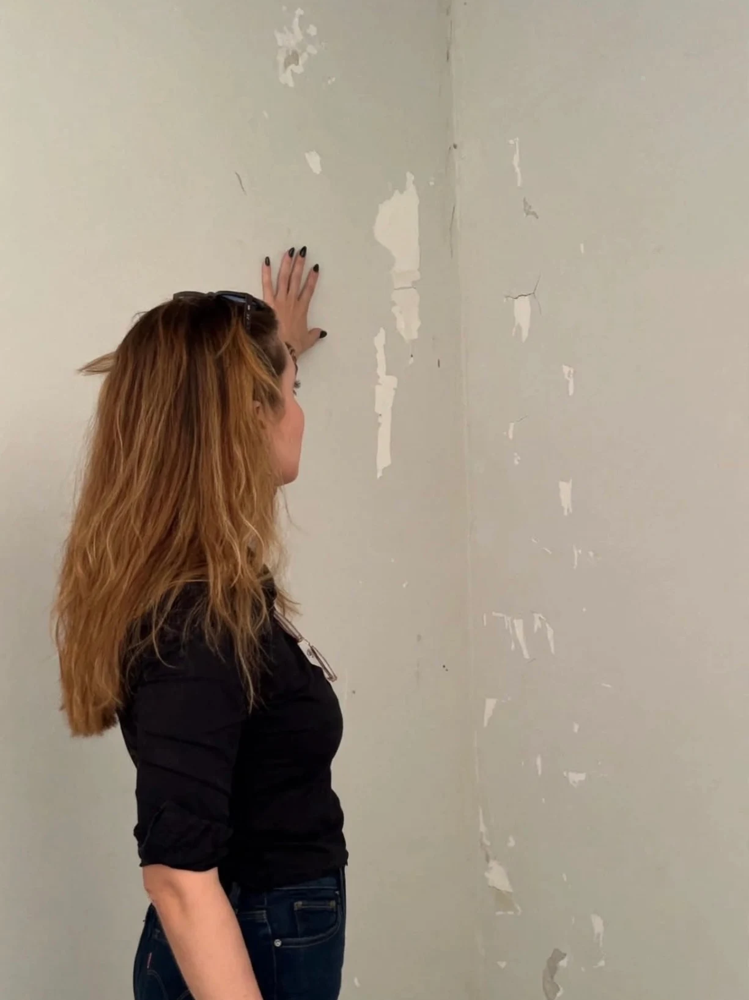

Vendemos segurança e diagnóstico técnico do estado real de uma edificação. Nossos laudos transformam dúvidas em respostas técnicas, documentadas e juridicamente defensáveis em todo o Mato Grosso do Sul.
Vistorias do seu imóvel com registro técnico minucioso, garantindo a preservação de direitos e prevenindo conflitos antes, durante ou após obras.

Investigação aprofundada da causa de manifestações patológicas e anomalias construtivas. Diferenciamos sintomas estéticos de falhas graves, indicando a conduta técnica precisa de recuperação.

Assessoria técnica contínua e estratégica durante e após a execução da obra, com foco em qualidade construtiva, prevenção de passivos e resolução ágil de inconformidades.

Verificação minuciosa da conformidade técnica e regulatória em obras públicas e privadas, checando projetos, memoriais descritivos, normas vigentes e contratos.

Investigação pericial com rigor metodológico para fundamentar processos judiciais, composições extrajudiciais e regulação técnica de sinistros em seguradoras.

Determinação do valor técnico real de mercado de imóveis urbanos e rurais, com fundamentação estatística e metodológica estritamente aderente à NBR 14653 da ABNT.

"O cliente troca a dúvida por uma resposta técnica, documentada e juridicamente defensável. Algo que ele pode usar para negociar, litigar, reformar com segurança ou simplesmente dormir tranquilo sabendo o real estado do que possui. É a técnica a serviço de uma decisão que, sem ela, seria tomada no escuro."